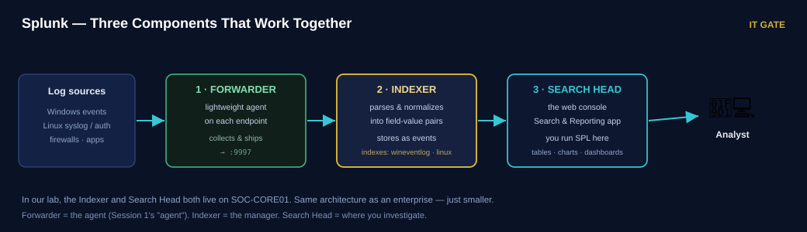
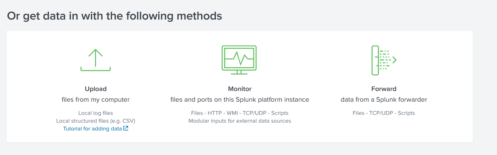
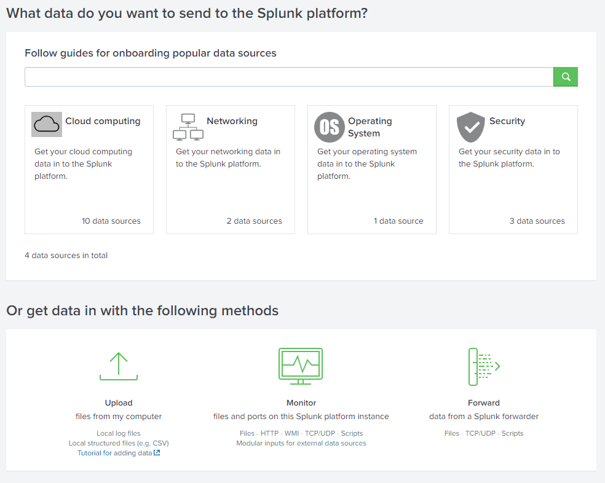
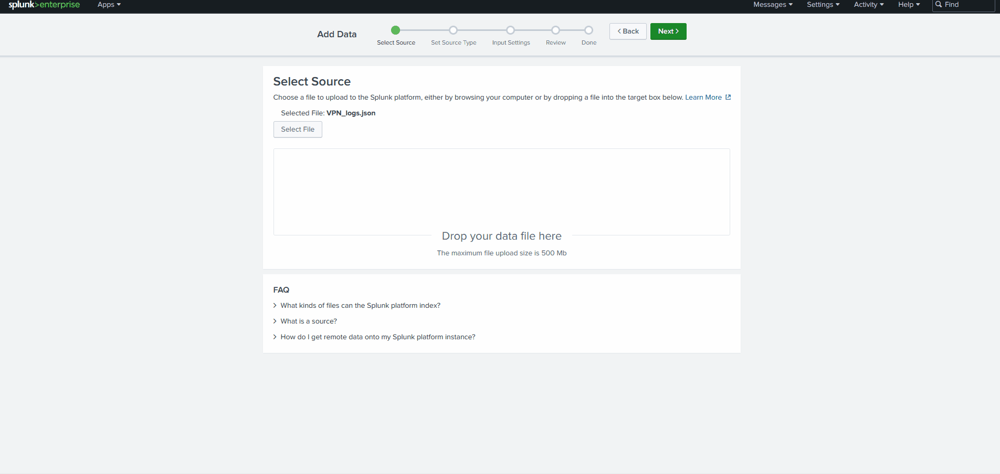

Build the Lab & Make Logs Flow
Yesterday the SIEM was a concept. Today you build one, point two machines at it, and watch your first real logs arrive.
Today's agenda
| Block | Topic | Time |
|---|---|---|
| 1 | Recap Session 1 | 10 min |
| 2 | Log pipeline · Splunk architecture · demo | 40 min |
| 3 | Lab — build the base lab & install Splunk | 55 min |
| — | Break | 15 min |
| 4 | Lab — forwarders on Windows & Linux | 50 min |
| 5 | Verify logs · upload & search practice | 35 min |
| 6 | Investigation challenges · knowledge check · homework | 35 min |
You need VMware installed and BIOS virtualization enabled (Session 1 homework). If your laptop is not ready, pair with someone today and catch up before Session 3.
What You Will Be Able To Do
Five things — all hands-on.
- Describe the eight stages a log passes through, from creation to alert.
- Name Splunk's three roles — forwarder, indexer, search head — and what each does.
- Install Splunk and enable it to receive logs on port 9997.
- Configure a Universal Forwarder with
inputs.confandoutputs.conf. - Verify logs are arriving and run your first SPL search.
Do not move to the next step until the verification passes. A broken step now becomes ten broken steps later. Slow is smooth, smooth is fast.
Quick Recap — Session 1
Answer before you reveal. If any of these feel shaky, flag it now.
Q1 Where does parsing configuration live?
- On the SIEM server
- On the agent, on each machine
- In the analyst's dashboard
- In the firewall
Q2 SIEM combines which two capabilities?
- Endpoint + network detection
- Incident + event response
- Security Information Management + Security Event Management
- Storage + firewalling
Q3 Name the five core SOC functions in order.
Show answer
Collection → Detection → Triage → Investigation → Response. Today we build the Collection function.
Q4 Last session's promise was "the agent collects, the manager holds the rules". Which part do we make real today?
Show answer
Both halves — you install the manager (Splunk) and the agents (forwarders). The rules themselves come in Session 4.
The Alert That Never Came
A true and very common failure.
A company is attacked over SSH on a Linux server. The server recorded every failed login in
/var/log/auth.log — hundreds of them. The SIEM had a perfect brute-force rule ready.
No alert ever fired. Why? Nobody had configured that server to forward its logs. The evidence sat on the machine, unread, while the attacker walked in.
A detection rule is worthless if the log never reaches the SIEM. Collection is step one for a reason. Today you make sure the logs actually arrive — the single most common thing SOCs get wrong.
The Log Pipeline — Eight Stages
Every log takes the same journey. Know the stages and you can fix any break.
| # | Stage | What happens | Where today |
|---|---|---|---|
| 1 | Generation | A machine writes a log line | Windows & Linux victims |
| 2 | Collection | An agent picks the log up | Universal Forwarder |
| 3 | Shipping | The log travels over the network | Port 9997 |
| 4 | Aggregation | All sources land in one place | Splunk indexer |
| 5 | Parsing | Raw text → fields | Splunk sourcetypes |
| 6 | Storage | Indexed for fast search | Splunk indexes |
| 7 | Analysis | You search and pivot | SPL (today) |
| 8 | Alerting | A rule match notifies you | Session 4 |
When "there is no data", walk this pipeline backwards: is it alerting? indexed? parsed? arriving? being collected? being generated? The break is always at one specific stage.
Module 3 · lesson 3.4 — Log collection, shipping & aggregation
Splunk Architecture — Three Roles
Splunk is one product that plays three parts. In our lab, two of them live on one server.
| Role | Job | Where in our lab |
|---|---|---|
| Universal Forwarder the agent |
Sits on each machine, collects logs, ships them out. Lightweight — no searching. | WIN-VICTIM01 & LNX-VICTIM01 |
| Indexer the manager |
Receives logs, parses and indexes them, stores them for fast search. | SOC-CORE01 |
| Search Head the console |
The web interface where you run searches and build dashboards. | SOC-CORE01 (same box) |

In a real enterprise these are separate servers — many forwarders, a cluster of indexers, dedicated search heads. In our lab the indexer and search head share SOC-CORE01. The architecture is identical, just smaller.
A Universal Forwarder just ships logs (what we use). A Heavy Forwarder can parse and filter before sending. Start universal — it covers 90% of needs.
Module 3 · lesson 3.5 — SIEM fundamentals (Splunk)
Watch It Done Once
The instructor builds the whole flow while you watch. Then you do it yourself.
Follow along on screen. Do not type yet — watch the shape of the whole thing so the steps make sense when you do them.
- Install Splunk on the Ubuntu server, start it, open the web UI.
- Enable receiving on port 9997 — the door logs come in through.
- Create indexes — separate buckets for Windows and Linux logs.
- Install a forwarder on a victim and point it at the server.
- Generate a log — log in and out — and watch it appear in Splunk.

Notice the instructor verifies after every step — checking the data arrived before moving on. Copy that habit. It is the difference between a working lab and a mystery to debug.
Lab — Install Splunk on SOC-CORE01
Your turn. Go at your own pace and verify each step.
Your VMs exist with static IPs on one shared host-only network (VMnet10, 10.10.20.0/24).
SOC-CORE01 is 10.10.20.10. Snapshot it now, named pre-splunk.
• Two separate host-only networks don't route — put all VMs on ONE (VMnet10).
• Use Ubuntu Server, not Desktop.
• Store VMs on a data drive, not OneDrive/C: — a full C: breaks VMware networking.
• Running as root? add --run-as-root and enable boot-start -user root.
- Install Splunk Enterprise.
Download the .deb from splunk.com (free account), copy it to SOC-CORE01, then:
sudo dpkg -i splunk-*.deb sudo /opt/splunk/bin/splunk start --accept-license --run-as-root # set the admin username and password when prompted sudo /opt/splunk/bin/splunk enable boot-start - Open the web interface.
From your host browser:
http://10.10.20.10:8000— log in with the admin account you just set. - Enable the receiver on port 9997.
This is the door forwarders send logs through.
sudo /opt/splunk/bin/splunk enable listen 9997 -auth admin:<your-password> - Create your indexes.
Separate buckets keep Windows and Linux data clean and searchable.
sudo /opt/splunk/bin/splunk add index wineventlog sudo /opt/splunk/bin/splunk add index linux
✅ Verification
- The Splunk web UI opens at
http://10.10.20.10:8000and you can log in - Settings → Indexes shows
wineventlogandlinux - Settings → Forwarding and receiving → Receive data shows port
9997enabled
Check Splunk is running (sudo /opt/splunk/bin/splunk status) and the Ubuntu firewall
allows it (sudo ufw allow 8000,9997/tcp).
Snapshot SOC-CORE01 again, named splunk-ready.
Knowledge Check — First Half
Q1 Which port do forwarders send logs to by default?
- 8000
- 443
- 9997
- 22
Q2 Which Splunk role sits on the victim machine and only ships logs?
- Universal Forwarder
- Indexer
- Search Head
- Deployment Server
Q3 Why do we create separate indexes for Windows and Linux instead of one big index?
Show answer
Cleaner searches (scope to index=linux), easier access control and retention per source, and better performance. Good hygiene from day one.
Q4 You enabled a great rule but no alert fires. Using today's pipeline, list what you'd check.
Show answer
Walk it backwards: is the data indexed (index=… returns events)? Is it arriving (receiver on 9997)? Is the forwarder running and configured to send that source? Is the source even generating the log?
Break
Stretch. When we return: the agents.
Break time
Press start when the break begins.
Use the break to catch up or pair with a neighbour. You need the server working before the next block.
Lab — Forwarder on WIN-VICTIM01
Install the agent, tell it what to collect, tell it where to send.
- Install the Universal Forwarder.
Download the Windows UF (.msi) from splunk.com and install it. During setup, when asked for a receiving indexer, you can enter
10.10.20.10:9997— or set it in the file below. - Tell it what to collect.
Create
C:\Program Files\SplunkUniversalForwarder\etc\system\local\inputs.conf:[WinEventLog://Security] disabled = 0 index = wineventlog [WinEventLog://System] disabled = 0 index = wineventlog [WinEventLog://Application] disabled = 0 index = wineventlog - Tell it where to send.
Create
outputs.confin the same folder:[tcpout] defaultGroup = soc [tcpout:soc] server = 10.10.20.10:9997 - Restart the forwarder.
Restart-Service SplunkForwarder
✅ Verification
Get-Service SplunkForwardershows Running- In Splunk, search
index=wineventlog— events appear within a minute - Log out and back in on WIN-VICTIM01 → a new
4624shows up
inputs.conf is the "parsing/collection config on the agent" we talked about.
outputs.conf points at the manager. You are holding both halves now.
Lab — Forwarder on LNX-VICTIM01
Same idea, Linux commands.
- Install and start the forwarder.
sudo dpkg -i splunkforwarder-*.deb sudo /opt/splunkforwarder/bin/splunk start --accept-license - Point it at the indexer.
sudo /opt/splunkforwarder/bin/splunk add forward-server 10.10.20.10:9997 -auth admin:<pw> - Monitor the auth and system logs.
sudo /opt/splunkforwarder/bin/splunk add monitor /var/log/auth.log -index linux sudo /opt/splunkforwarder/bin/splunk add monitor /var/log/syslog -index linux sudo /opt/splunkforwarder/bin/splunk restart
✅ Verification
index=linuxreturns events in Splunk- SSH into LNX-VICTIM01 → a login line appears in
auth.log→ shows in Splunk - A wrong password → "Failed password" line appears in Splunk
/var/log/auth.log is the single most useful Linux log for a SOC analyst — SSH,
sudo, and logins all live here. We will hunt in it constantly from Session 4 onward.
Reading the Config, and Your First SPL
Understand what you just wrote, then search it.
What those two files mean
| File | Answers | Key line |
|---|---|---|
inputs.conf | WHAT do I collect? | [WinEventLog://Security] |
outputs.conf | WHERE do I send it? | server = 10.10.20.10:9997 |
Your first searches
In the Splunk search bar, always start with an index and a time range — never search "All time" over everything.
# Every successful Windows logon, counted by account
index=wineventlog EventCode=4624
| stats count by Account_Name
# Failed logons — the start of a brute force
index=wineventlog EventCode=4625
| table _time, Account_Name, Source_Network_Address
# Linux failed passwords
index=linux "Failed password"
| stats count by hostRead left to right: index=… filters → | command → | command.
These are just enough to confirm your logs arrived. You do not need to master SPL today — full search training is Session 3. Copy, run, verify.
Module 3 · lesson 3.10 — Splunk Query Language
Practice — Upload Logs & Search Them
Beyond your own machines: ingest a real log file and answer questions from it, the way analysts do.
Your forwarders push live data. But analysts also upload evidence files to investigate. We use the TryHackMe Splunk: The Basics VPN-log dataset to practise the full ingest-and-search flow.
The 5-step upload wizard
| Step | What you choose |
|---|---|
| 1 · Select source | The VPN_logs file (Add Data → Upload) |
| 2 · Select source type | JSON (Splunk auto-detects it) |
| 3 · Input settings | Create index vpn_logs, set a hostname |
| 4 · Review | Check the settings |
| 5 · Done | Search & Reporting → time range All time |


Search it (JSON needs spath)
# how many VPN events total?
index=vpn_logs | stats count
# JSON fields not showing? parse them with spath
index=vpn_logs | spath | search UserName="Maleena" | stats count
# which users came from one IP?
index=vpn_logs | spath | search Source_ip="107.14.182.38"
| stats values(UserName) as UserName count
# any logins from outside France?
index=vpn_logs | spath | search Source_Country!="France" | stats count| spath parses JSON fields so you can search them. | stats count answers
"how many?". These two carry you through most beginner Splunk questions.
This is exactly how you'll be handed evidence later in the course: a log file, and questions. Upload → parse → search → answer. Same loop, harder data.
Module 3 · lesson 3.10 — Splunk Query Language (full SPL is Session 3)
Investigation — Find Yourself in the Logs
🔎 Open the Investigation Challenges (VPN · SSH · Web)
Prove the whole pipeline works by generating events and finding them.
Do each action, then find it in Splunk. Write down the search you used.
| Do this | Then find it |
|---|---|
| Log off and back on to WIN-VICTIM01 | Your 4624 logon — what Logon Type is it? |
| Type a wrong password once on Windows | The 4625 — does it show your username? |
| SSH into LNX-VICTIM01 with a wrong password | The "Failed password" line — what source IP? |
| SSH in correctly | The "Accepted password" line — same IP? |
Which index held each event? How long did it take to appear? If one never appeared, which pipeline stage broke — and how did you find out?
You just did what an attacker does (failed then successful login) and watched it become evidence. Every investigation for the rest of the course starts exactly here: an action, a log, a search.
Investigation Challenges
Now use your SIEM like an analyst: ingest a dataset, then answer every question from the evidence — no guessing.
Ingest (Add Data → Upload → source type _json)
| Challenge | Index | Time range |
|---|---|---|
| Warm-up · VPN | vpn_logs | All time |
| Scenario 1 · SSH endpoint (SSH → malware) | endpoint_logs | 2024-03-14 → 03-19 |
| Scenario 2 · Web attack chain | web_logs | 2024-04-08 → 04-12 |
🔎 Open the full challenges (datasets + 16 questions)
This is the loop you'll repeat all course: upload → parse (spath) → search
(stats) → answer. Scenario 1 walks an SSH brute-force into a cryptominer;
Scenario 2 walks a web recon into a web shell. Reconstruct each from the logs alone.
Start the VPN warm-up together, then race Scenario 1 in pairs. Scenario 2 is homework. Instructors: SPL solutions are on the challenges page under each scenario.
Module 3 · lesson 3.10 (SPL) · 3.15–3.16 (triage & IOCs — deepened in Sessions 4–5)
Knowledge Check — Second Half
Q1 Which file tells a forwarder where to send logs?
- inputs.conf
- outputs.conf
- props.conf
- server.conf
Q2 A 4624 event tells you a successful logon. What extra detail tells you how they logged in?
- The event's severity
- The index name
- The source port
- The Logon Type
Q3 Write an SPL search that counts Linux "Failed password" events per host.
Show answer
index=linux "Failed password" | stats count by host
Q4 Your Windows forwarder is "Running" but no events appear in Splunk. Name two likely causes.
Show answer
Any two: outputs.conf has the wrong server/port; the receiver on 9997 isn't enabled; a firewall blocks 9997; inputs.conf is in the wrong folder or the index name doesn't exist.
Summary & Cheat Sheet
What we built, in order
- The eight-stage log pipeline — the map for every "no data" problem.
- Splunk's three roles — forwarder, indexer, search head.
- Installed Splunk and enabled receiving on 9997.
- Created the wineventlog and linux indexes.
- Installed forwarders and wrote
inputs.conf+outputs.conf. - Verified logs flowing and ran first SPL.
📋 Session 2 Cheat Sheet
Splunk roles
- Universal Forwarder — agent, ships logs
- Indexer — receives, parses, stores
- Search Head — the web console
- Lab: indexer + search head on SOC-CORE01
Key ports
8000— Splunk web UI9997— receive logs from forwarders8089— management
The two config files
inputs.conf— WHAT to collectoutputs.conf— WHERE to send- Windows path:
...\SplunkUniversalForwarder\etc\system\local\
Install commands
splunk start --accept-licensesplunk enable listen 9997splunk add index wineventlogsplunk add forward-server IP:9997splunk add monitor /var/log/auth.log
First SPL
- Always start with
index=+ time range | stats count by field| table _time, field, field- Pipe
|= pass to next command
Debug "no data"
- Walk the pipeline backwards
- Indexed? → arriving? → collected? → generated?
- Forwarder running? outputs.conf right? 9997 open?
- Index name exists and matches?
Search starters (SPL)
index=x | stats count- JSON: add
| spath | search Field="value"| table _time, a, b- Time range = All time
Upload a log file
- Add Data → Upload
- File → source type (JSON)
- Set index + hostname
- Review → Done → search
Real-build gotchas
- One shared VMnet (host-only nets don't route)
- Ubuntu Server, not Desktop
- VMs off OneDrive/C:
--run-as-root·-user root- Win+L makes a 4624; whoami doesn't
Logs are flowing but they are shallow. Session 3 turns on Sysmon and the deep Windows channels, and you learn to read and search them like an analyst.
Key Takeaways
- A log's journey: generate → collect → ship → aggregate → parse → store → analyze → alert.
- Splunk = forwarder (agent) + indexer (store) + search head (console).
- Forwarders send to the indexer on port 9997.
inputs.conf= what to collect.outputs.conf= where to send.- A rule is worthless if the log never arrives — collection is step one.
- When there's no data, walk the pipeline backwards to find the break.
- Every investigation starts with: an action → a log → a search.
Homework
Finish your lab and build SPL confidence before Session 3.
Finish your lab — logs from both machines
RequiredDue · 4 AugBoth index=wineventlog and index=linux must return live events.
If a step failed in class, fix it now. This is the foundation for every session after this.
TryHackMe — Splunk: The Basics
RequiredDue · 4 AugFinish the whole room — it repeats the VPN-log upload and SPL we did in class, so it should feel familiar. Reinforcement before Session 3 goes deep on SPL.
TryHackMe — Intro to Logs
RequiredDue · 4 AugLog types, formats and retention — reinforces the pipeline you built today.
Go deeper — Splunk: Setting up a SOC Lab
OptionalDue · 11 AugTHM walks a Splunk lab build very close to ours — a good way to reinforce what you did.
Progress is saved in this browser. "Add all deadlines" downloads an .ics for Outlook, Google or Apple Calendar. Tasks you create are saved here too — use ✕ to remove.
References
Primary source — INE eCIR v2
| Topic | INE module & lesson |
|---|---|
| Log collection, shipping & aggregation | Module 3 · 3.4 |
| SIEM fundamentals (Splunk) | Module 3 · 3.5 |
| Install & configure Splunk (labs) | Module 3 · 3.6–3.9 |
| Splunk Query Language | Module 3 · 3.10 |
Supporting labs — TryHackMe
Lab guide
INE is the primary reference for the exam. THM reinforces — where wording differs, INE wins.
Create a homework task
Add your own lab, reading or exercise to this session's homework list.
Navigate with ← → arrow keys